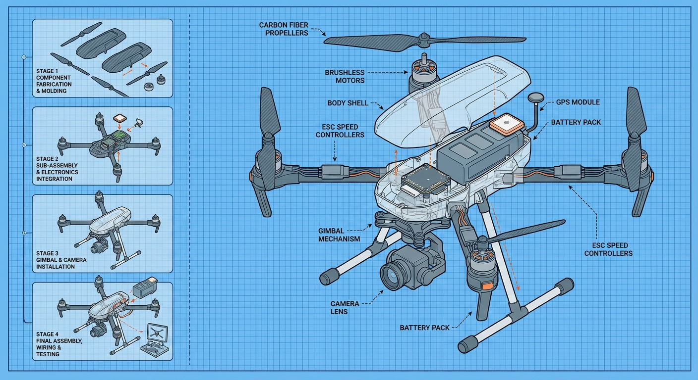
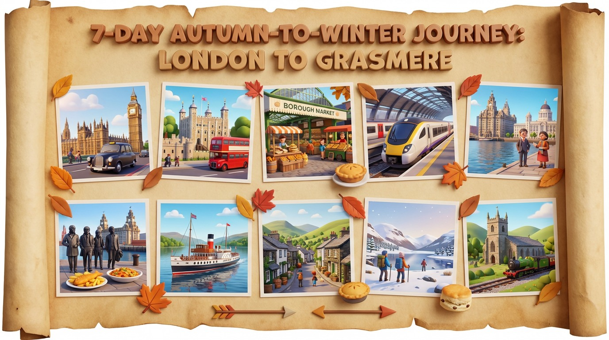
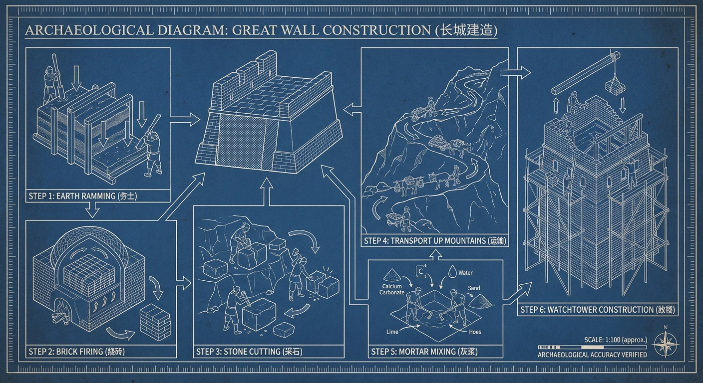
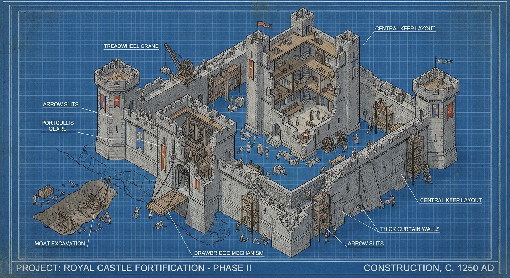
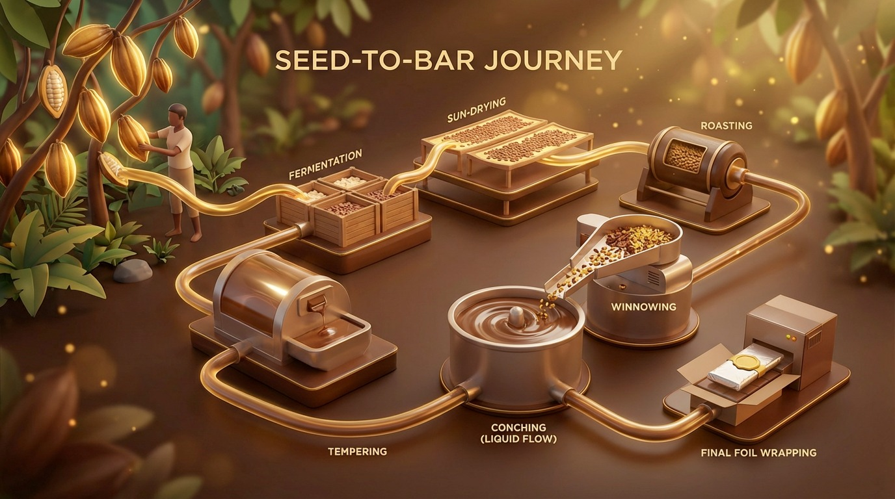
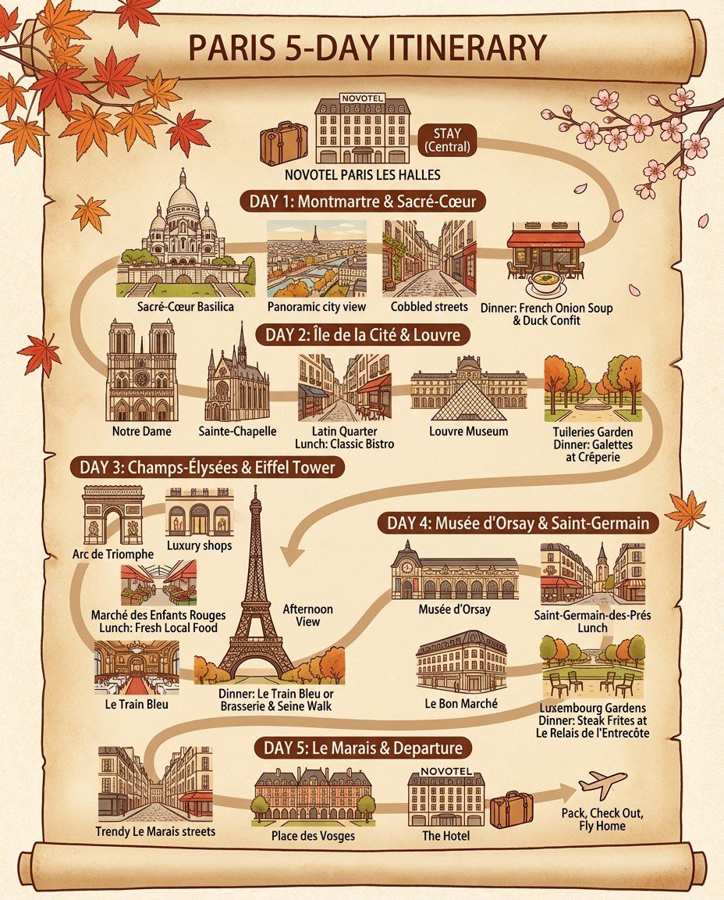
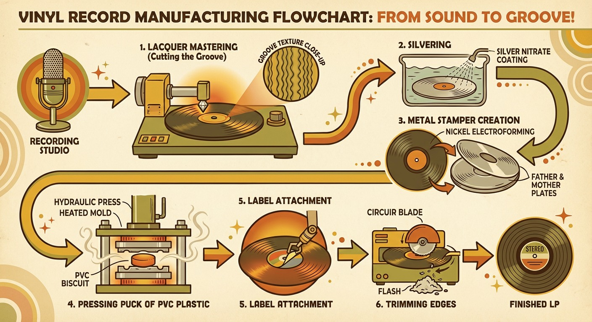
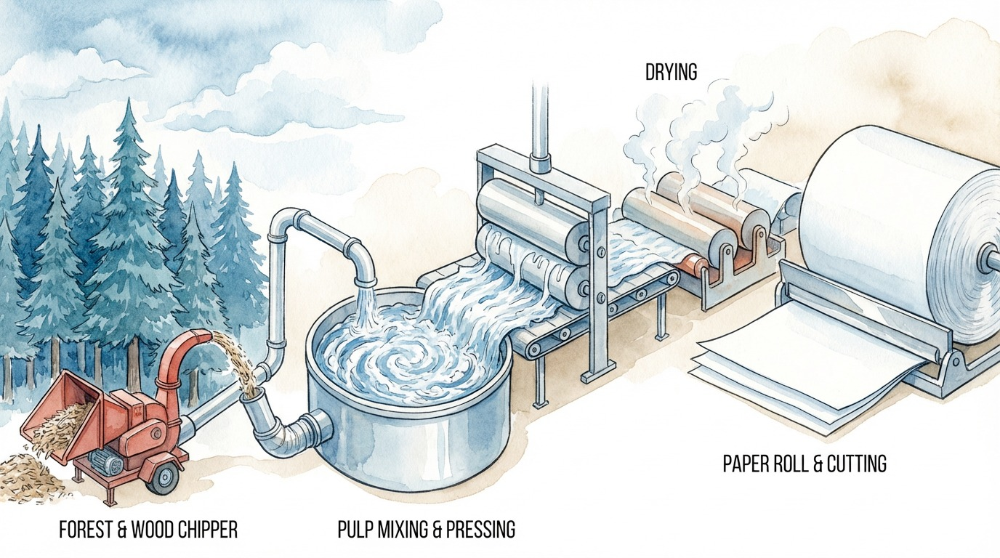

1
Process Diagrams
Turn any process into a clear, step-by-step visual – food, factories, products, or systems.
 Pizza
Pizza
 Glass
Glass
 Silk
Silk
Food journeys
Manufacturing
How-it-works
Pizza
Glass
Silk
Sample prompt
Create a step-by-step diagram showing how cheddar cheese is made, with labeled stages,
arrows, and a warm educational style.
2
Exploded & Cutaway Views
Reveal hidden structure with floating layers and x-ray–style cutaways.
 Burger
Burger
Tech internals
Food layers
Exploded products
Burger
Tech

Drone
Sample prompt
Generate an exploded view of a flagship smartphone, with each component floating in the air
and labeled like a technical poster.
3
Maps & Illustrated Guides
Transform trips or journeys into illustrated maps with icons, routes, and day markers.
 Coffee map
Coffee map
 Variant
Variant
Travel plans
Story routes
Customer journeys
Coffee map
Variant

3D trip
Sample prompt
Using this 5-day Paris itinerary, create a hand-drawn travel map with landmarks, food spots,
and “Day 1–5” labels, all text in English.
4
Isometric & Blueprints
Visualize buildings and landmarks with isometric views and blueprint overlays.
 Landmarks
Landmarks
Castles
Great Wall
Landmarks

Blueprint

Castle
Landmarks
Sample prompt
Create an infographic of the Eiffel Tower that mixes a real photo with blueprint-style white
technical annotations and measurements.
5
Annotation & Analysis
Upload a photo and let AI annotate it – calories, outfits, poses, or technical parts.
 Meal
Meal
 Outfit
Outfit
 Poses
Poses
Food calories
Fashion mood boards
Character poses
Meal
Outfit
Poses
Sample prompt
From this meal photo, annotate each food item with its name and approximate calories using
clean, minimal callout boxes.
6
Data & Business Visuals
Turn reports and statistics into sketch-style charts or polished business infographics.
 Earnings
Earnings
 Stats
Stats
 Tea stats
Tea stats
Country metrics
Earnings
Dashboards
Earnings
Stats
Tea stats
Sample prompt
Using this quarterly earnings PDF, create one infographic with hero metrics, segment revenue,
and key risks in a clean dashboard layout.
7
Storytelling & Scenes
Build storyboards, kids’ learning pages, and character-driven sequences.
 Diorama
Diorama
Film noir
Kids’ claymation
Scene sequences
Diorama

3D story

Getaway
Sample prompt
Create a 12-panel storyboard where two characters follow clues to a missing treasure,
telling the full story visually without any text.
8
Knowledge Compression
Feed long PDFs, playbooks, or notes into AI and get one clear visual overview.
 Manufacturing
Manufacturing
PDF → diagram
Playbooks
Cheat sheets
Manufacturing

Vinyl

Paper
Sample prompt
Take this 20-page process document and compress it into one diagram that shows the
5 main phases and key decision points.